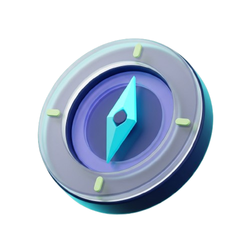

Your next career move, mapped clearly.
Tell PathFinder where you are, what you enjoy, and where you want to go. Get a personalized route with the skills, milestones, and next steps to move forward.

How PathFinder works
A multi-agent AI system that translates your background into direction.
Share your story
Tell us about your background, what tasks energize you, and your constraints in plain language.
Check inferred profile
Review the skills, strengths, and confidence levels our orchestrator extracts from your profile.
Explore and compare
See 3 tailored paths with transparent explanations, fit scores, skill gap analysis, and priority tuning.
Follow the roadmap
Get a phased week-by-week learning roadmap with curated resources and track your progress.
Extracting profile skills...
Comparing your profile against 20+ roles
Review your inferred skills
Our Skill Extraction Agent read your onboarding answers and inferred the following strengths. Adjust your confidence levels before we build your roadmap.
Inferred Skills & Confidence
Extracted Profile Summary
A final-year student interested in visual communication, writing, and structured problem solving, looking for a flexible career path.
PathFinder combines your skills, interests, and constraints to score roles. Generates in 3 seconds.